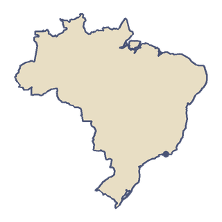

南美洲
巴西
巴西是南美洲最大的国家，差不多占了整个大陆的一半。亚马孙雨林大约 60% 在它境内。在美洲，只有巴西以葡萄牙语为主要语言。
“我想沿着亚马孙河一直飞到大海。”
- 1906 年 10 月 23 日，阿尔贝托·桑托斯-杜蒙在巴黎驾驶他的 14-bis 飞了大约 60 米：这是第一次在公众面前进行的动力飞行。
- 南美洲的国家里，只有两个不和巴西接壤：智利和厄瓜多尔。

国土
巴西面积约 850 万平方公里，是世界面积第五大的国家。它由 26 个州和一个联邦区组成。大西洋海岸线长约 7367 公里。最高点是内布利纳峰，高约 2995 米。潘塔纳尔是世界上最大的湿地，面积最大可达 23 万平方公里。
出行
在里约，桑托斯·杜蒙机场于 1936 年 11 月 30 日在瓜纳巴拉湾边开放。它以飞行先驱阿尔贝托·桑托斯-杜蒙的名字命名，以跑道短出名，是客机使用的最短跑道之一。1959 年，从这里飞往圣保罗的空中穿梭航班开通，这是世界上第一个这样的航班服务。新首都巴西利亚在 1960 年 4 月 21 日启用。它只用了 41 个月就建成，城市规划呈飞机的形状。
饮食
黑豆餐（feijoada）是一种用黑豆和猪肉炖成的菜，常被称为巴西的国菜。它在殖民时期的巴西形成，融合了葡萄牙、非洲和当地原住民的烹饪，通常配米饭一起吃。巴西也是世界上最大的咖啡生产国。它领先世界已经约 150 年，如今种出的咖啡约占全世界的三分之一。
足球
里约的马拉卡纳体育场在 1950 年为世界杯而启用。约 20 万人在这里观看了最后一场比赛。后来，这里还举办了 2014 年世界杯决赛和 2016 年奥运会的开幕式。